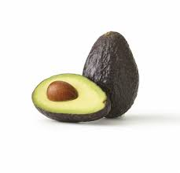

Apple

Description
An avocado is a bright green fruit with a large pit and dark
leathery skin. It's also known as alligator pear or butter fruit.
Avocados are a favorite of the produce section. They're the go-to
ingredient for guacamole dips.
Ingredients
- An avocado
- Salt
- Lime Juice
- Seasonings to enhance flavor and prevent browning
Steps
- Take your ripe avocado and place it on a board.
Using a sharp knife, cut lengthways around the entire fruit,
using your other hand to hold the avocado steady.
- Place your hands either side of the cut and twist to
split the avocado in half.
- Remove the stone by placing a spoon gently underneath it
and levering it up.
- Slice the two halves in half again and then peel away the skin
from the corners. You can then slice, mash or purée the avocado
for your chosen dish, drink or snack!
Home